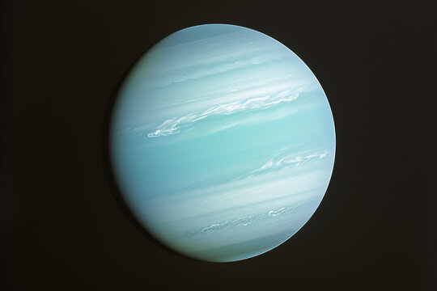
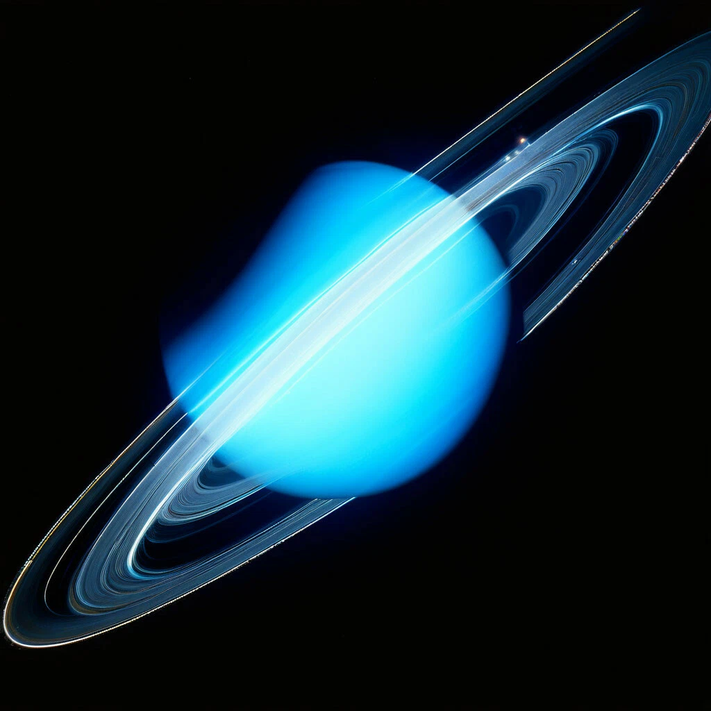
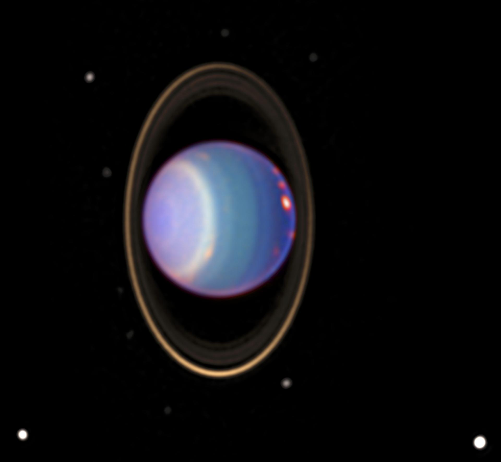

Cедьмая планета Солнечной системы, третья по диаметру и четвёртая по массе. Была открыта 13 марта 1781 года английским астрономом Уильямом Гершелем. Названа в честь греческого бога неба Урана
В отличие от газовых гигантов — Сатурна и Юпитера, состоящих в основном из водорода и гелия, в недрах Урана и схожего с ним Нептуна отсутствует металлический водород, но зато много льда в его высокотемпературных модификациях.


